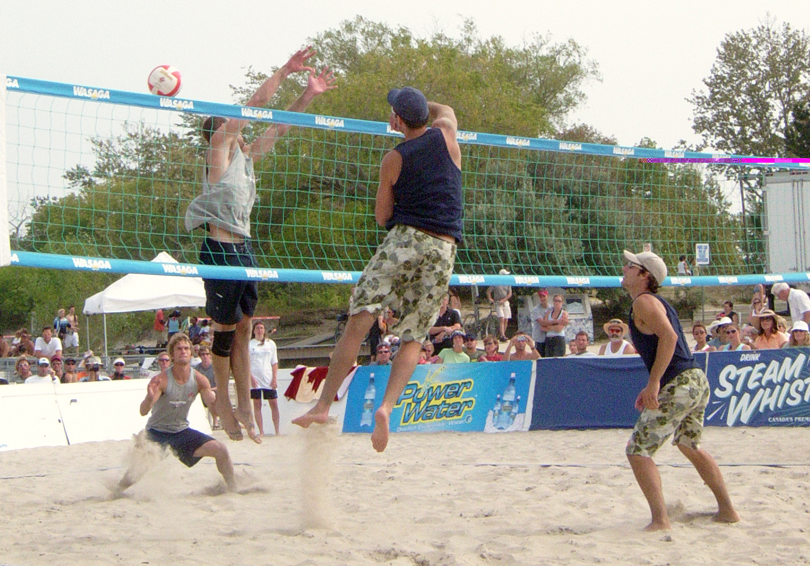
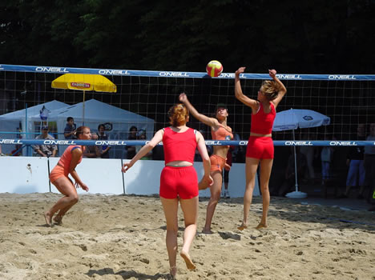

Who Can Play
There are millions of people all around the world who play volleyball at least once a week. Volleyball is a sport that is safe, fun and does not require extreme fitness. Since you don’t have to move around the court too fast, it’s great for people who want a low-impact sport that will help them get fit without pushing them to their limit. For those who are a bit more competitive, the sport is fantastic because games can be really exciting and intense, but there’s always a net between you and your opponents.
Beach volleyball is suitable for people of all ages, and men and women alike.
Anyone considering starting a new sport or exercise program should see a doctor first.
 